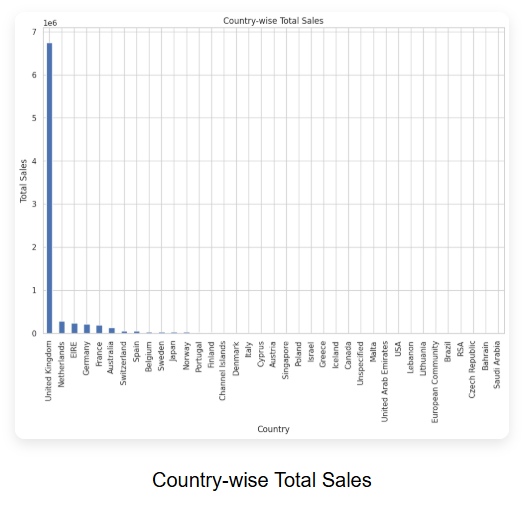
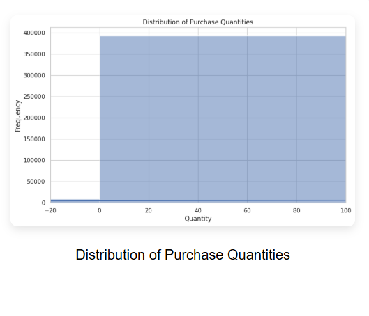
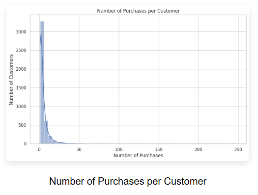
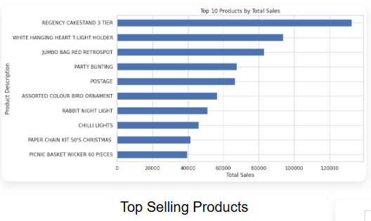
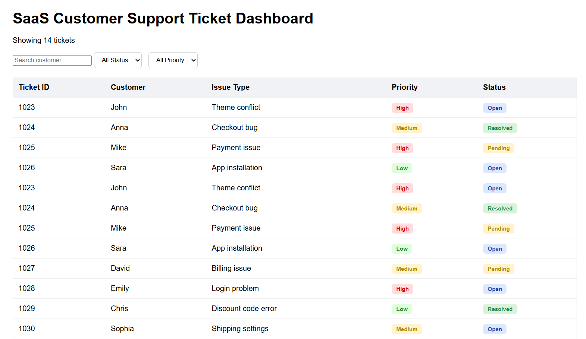

Visualizations

Customer Segmentation Dashboard
Machine learning model that groups e-commerce customers based on purchasing behaviour for targeted marketing insights.
GitHub
Customer Segmentation Analysis
Interactive dashboard visualizing customer clusters and purchasing patterns for data-driven marketing decisions.
GitHub
Customer Segmentation Visualization
Data analysis project using Python to explore customer behaviour and generate marketing insights.
GitHub
Customer Segmentation Insights
Visual representation of customer segments and sales trends using data analytics techniques.
GitHub
SaaS Customer Support Dashboard
Web-based dashboard simulating a SaaS support system for managing tickets and tracking merchant issues.
GitHub
Shopify Store UI Design
Custom Shopify storefront design focusing on user-friendly product layout and navigation.
GitHub
Shopify Product Page Optimization
Optimized Shopify product pages to improve usability, layout structure, and customer experience.
GitHub
Shopify E-commerce Store Setup
Configured and customized a Shopify store to demonstrate real merchant storefront workflows.
GitHub